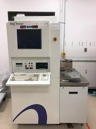

KLA-Trencor F5

Wat is de KLA F5?
De KLA-Trencor F5 is een meetmachine die wordt gebruikt om dunnen laagjes (resist) op wafers te meten.
Je gebruikt de F5 om te controleren of de laag de juiste dikte en kwaliteit heeft. Je kan er 200mm en 300mm op meten.
Hoe werkt de KLA F5?
- 1. Licht op de wafer schijnen:
- - De F5 stuurt gepolariseerd licht op de wafer. Dit is speciaal licht waarbij de trillingsrichting gecontroleerd is
- 2. Licht wordt teruggekaatst | Het licht kaatst terug vanaf:
- - Het oppervlak van de laag
- - De onderkant van de laag
- 3. Analyse van het licht | De machine meet:
- - Hoe het licht verandert
- - Bij welke golflengtes
Dit gebeurt met een techniek die heet:
Spectroscopische ellipsometrie
Het licht vertelt eigenlijk hoe dun en welk soort materiaal de laag is, vergelijkbaar met hoe zeepbellen van kleur veranderen door hun dikte.
- 4. De software rekent het uit:
- De F5 berekend hoe dik de laag is
- 5. Resultaat tonen | Binnen enkele seconden zie je op het scherm:
- - Dikte van de film
- - Eventuele afwijkingen